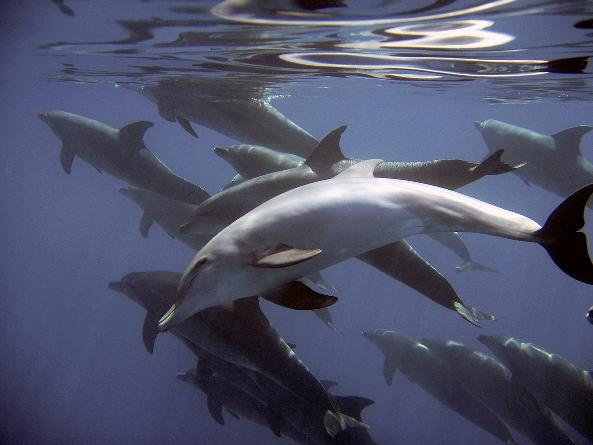
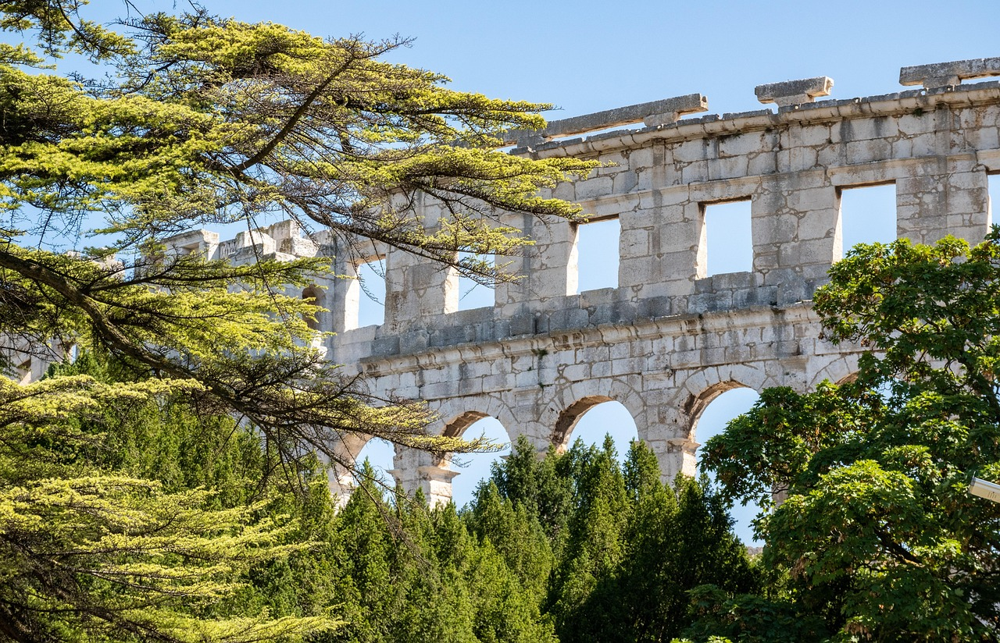

Nos services à Pula : excursions, location et séjours
Choisissez une prestation ou demandez-nous d’en combiner plusieurs. Chaque fiche présente les horaires, les prix et ce qui est inclus.
Sur l’eau

Excursions en bateau à Pula
Excursion de l’après-midi 12:00–16:30 et sortie au coucher du soleil 18:00–21:00, 50 € par adulte.
En savoir plus
Coucher de soleil & dauphins
Une croisière du soir autour des Brijuni.
En savoir plus
Îles Brijuni
Le parc national vu depuis la mer.
En savoir plus
Baignade dans les grottes
En petit bateau, en journée ou en soirée.
En savoir plus
Rovinj & Venise
Excursions en bateau à la journée.
En savoir plus
Guide des excursions
Comparez les excursions et préparez votre sortie.
En savoir plus


Prêt à réserver ?
Indiquez-nous vos dates et le nombre de personnes. Nous vérifions les disponibilités et vous répondons sous 24 heures.